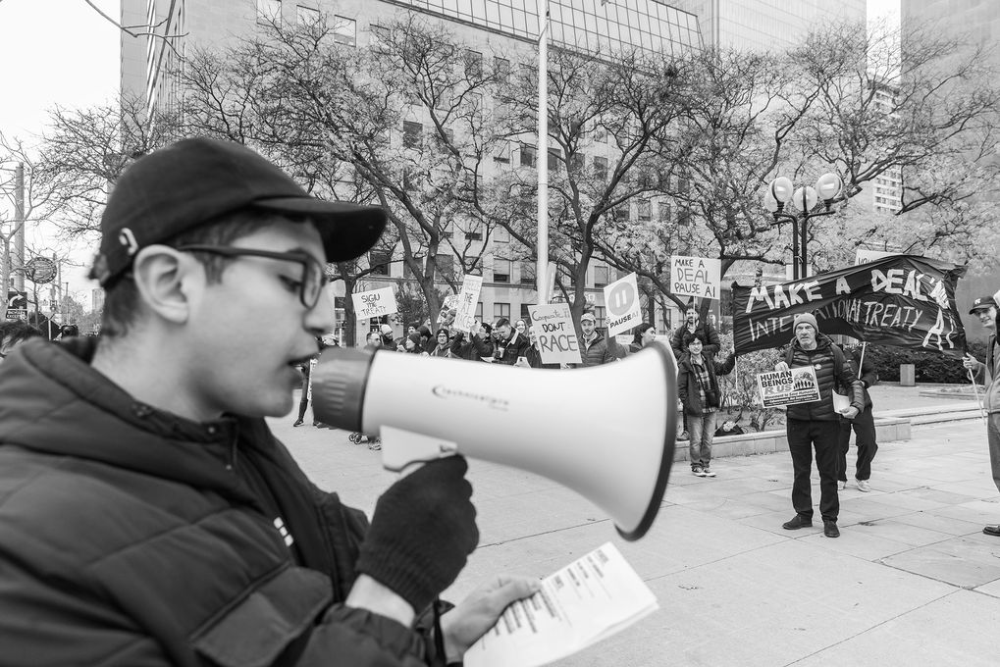
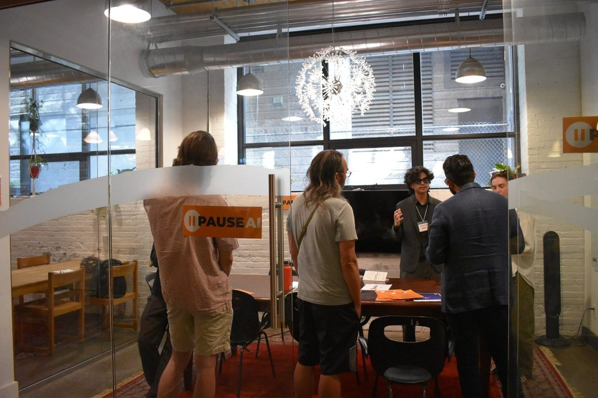
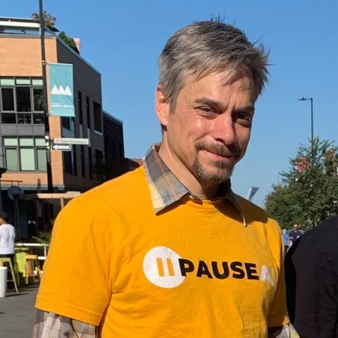

November 2026
Toronto AI Treaty March
Speeches at Queen’s Park, a march to the U.S. Consulate and a finish at Nathan Phillips Square.

PauseAI Toronto is a volunteer-run, non-partisan group raising awareness of risks from frontier AI. This page sets out our plan, what we have done so far, who we are and how we are governed.
We turn public concern about AI into political pressure, and pressure into key policy milestones.
Most Canadians are already uneasy about where AI is heading, but MPs rarely hear from them. We give that concern somewhere to go.

In May 2026, 68% of Canadians told the Angus Reid Institute that governments must heavily regulate AI and tech companies, even if it slows development.
Meetups, marches and letters to MPs turn private worry into visible, organised public demand.
Every action is aimed at a decision Ottawa can make.
November 2026
Speeches at Queen’s Park, a march to the U.S. Consulate and a finish at Nathan Phillips Square.
September 2026
PauseAI Toronto hosted a room at an AI safety community event at the Centre for Social Innovation. More than 150 people came.

Founder
Muhammad is the founder of PauseAI Toronto and Head of Partnerships for PauseAI Canada.

Director
Daniel is the Director of PauseAI Toronto and a Senior Consultant, where he supports a variety of projects including revenue generation and AI transformation.

Community Manager
Ilyass is PauseAI Toronto’s Community Manager. He has a background in public policy and data analysis.
PauseAI Toronto is run by volunteers. Tell us how you would like to help.
Join usThe PauseAI Toronto board and the rules we follow before accepting donations.
Director of PauseAI UK
Founder of PauseAI Toronto

Founder and National Leader of PauseAI Canada
We would like every donation to be public. Some donors have good reasons to stay private, so we hold ourselves to two rules instead.
A donor may work at an AI company, may not want to be approached by other groups, or may simply value privacy. People who do not know us may also want proof that PauseAI Toronto speaks for its volunteers and for citizens worried about AI, and for no one else. These two rules are that proof.
What we collect is held in confidence, shared only with the board for approval decisions, and never published without permission.
A donor with a specific financial interest in AI can only give without conditions. Any attempt to steer our strategy means the gift is returned.
The board approves every donor, and every donor adviser, giving or recommending more than C$10,000 in any 12 months. It sees all of the information above before it decides.
Join us, come to a meetup, or fund the work. The full plan and budget are in PauseAI Canada’s donor prospectus.